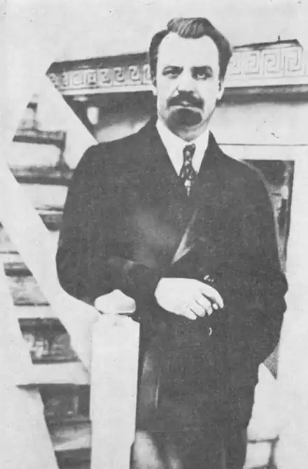
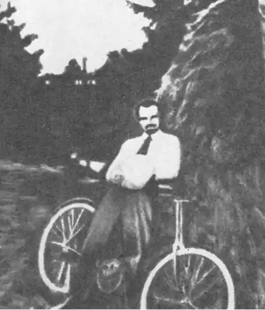
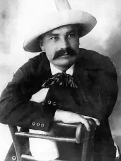
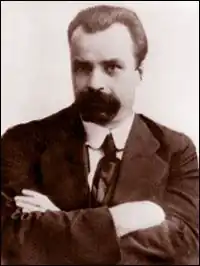

Винниченко Володимир Кирилович
(1880-1951)
письменник, громадський і державний діяч. Голова Директорії (1918-1919) Народився 1880 року в селі Веселий Кут Єлисаветградського повіту на Херсонщині (тепер Григор’ївка Кіровоградської області). Навчався у сільській народній школі, згодом у Єлисаветградській гімназії, на юридичному факультеті Київського університету. Брав участь у діяльності Революційної української партії, потім УСДРП. З 1903 р. — на професійній революційній роботі. Член та заступник голови Центральної Ради, перший голова Генерального секретаріату, генеральний секретар внутрішніх справ. Очолював українську делегацію, яка у травні 1917 р. передала Тимчасовому урядові вимоги Центральної Ради про надання Україні автономії. Автор усіх головних законодавчих актів УНР. Після відставки з поста прем’єра засудив гетьманський переворот. З листопада 1918 до лютого 1919 р. очолював Директорію. Усунутий за ліві погляди. Виїхавши за кордон, організував в Австрії Закордонну групу українських комуністів. У 1920 році повернувся в Україну, але спроби співпрацювати з більшовиками закінчилися невдало. З кінця 20-х років жив у Франції. Помер 6 березня 1951 року. Прах покоїться на цвинтарі Мужена. У своїх спогадах Розалія Винниченко писала, що Володимир народився у робітничо-селянській родині. Батько його Кирило Васильович Винниченко, замолоду селянин-наймит, переїхав з села до міста Єлисаветград й одружився з удовою Євдокією Павленко. Від першого шлюбу мати В.Ви-нниченка мала троє дітей: Андрія, Марію й Василя. Від шлюбу з К.В.Винниченком народився лише Володимир. У народній школі Володимир привернув до себе увагу своїми здібностями. Вчителька переконала батьків, щоб продовжувати освіту дитини. Володимира віддано до Єлисаветградської гімназії. Його українська вимова, бідний одяг та інші ознаки пролетарського походження викликали у дітей російської або зрусифікованої буржуазії ворожість. Тому були і бійки з учнями, і розбивання шибок. У старших класах він бере участь у революційній діяльності, пише революційну поему. Повз увагу керівництва гімназії це не пройшло — карцер, виключення з гімназії. Однак думок про навчання він не залишає. Одягнений в українське вбрання, у сивій шапці і з кийком у руці приходить на здавання іспитів екстерном у Златопiльську гімназію. Доля на цей раз усміхнулася — Володимир одержує диплом. Будучи студентом університету, створює таємну революційну організацію "Студентська громада". 1902 року його заарештовано і посаджено до міської в’язниці. Через недостатність доказів було випущено. На нього чекало виключення з гімназії. Через деякий час — знову арешти, втечі, партійна робота, написання книг та брошур на революційні теми. Революція 1917 року застає Винниченка в Москві. Упродовж трьох років, змінюючи різні посади, Винниченко прагне принести якнайбільшу користь Україні, її народові. Хоча вважав себе марксистом, але світогляд перебував під впливом гуманізму й західного лібералізму. Гуманізм більшовикам був ні до чого. За два місяці до еміграції він записав у "Щоденнику": "Нехай український обиватель говорить і думає, що йому хочеться, я їду за кордон, обтрусюю з себе всякий порох політики, обгороджуюсь книжками й поринаю в своє справжнє, єдине діло — літературу… Тут у соціалістичній совєтській Росії я ховаю свою 18-літню соціалістичну політичну діяльність. Я їду як письменник, а як політик я всією душею хочу померти". Літературна спадщина Володимира Винниченка — золотий фонд України. Появу перших його творів вітали Іван Франко і Леся Українка. Коцюбинський у 1909 році писав: "Кого у нас читають? Винниченка. Про кого скрізь йдуть розмови, як тільки річ торкається літератури? Про Винниченка. Кого купують? Знов Винниченка". "Серед млявої тонко-аристократичної та малосилої або ординарно шаблонової та безталанної генерації сучасних українських письменників, — писав І.Франко в рецензії на збірку оповідань В.Винниченка "Краса і сила" (1906), — раптом виринуло щось дуже, рішуче, мускулисте і повне темпераменту, щось таке, що не лізе в кишеню за словом, а сипле його потоками, що не сіє крізь сито, а валить валом як саме життя, всуміш, українське, московське, калічене й чисте, як срібло, що не знає меж своїй обсервації і границь своїй пластичній творчості. І відкіля ти взявся у нас такий? — хочеться по кождім оповіданню запитати д. Винниченка". Після 1920 року Володимир Винниченко, зрозуміло, не міг так легко струсити "порох політики". Не випадково V Всеукраїнський з’їзд оголосив Винниченка ворогом народу, поставив його "поза законом". Політичну діяльність він продовжував у Чехословаччині, Парижі, Франції… Науковці стверджують, що він на перших порах підтримував тісні зв’язки з українською національною еміграцією, з групою російських літераторів — Бєлим, Еренбургом, Ремізовим, але відмовився від творчої співпраці з видавництвом "Скифы". Перу Винниченка належить і проект програми антибільшовицького "Єдиного революційно-демократичного національно фронту". На жаль, об’єднати розбиті емігрантські групи не вдалося. "Власне тепер я все більше й більше відчуваю самотність: від антибольшевицьких кіл я відійшов, до большевицьких не ввійшов. Нема ні одної групи, з якою я почував би себе злитим, яка підтримувала б мене", — записав він 31 серпня 1925 року. І все більше зосереджується на літературній діяльності. Його п’єси "Брехня", "Чорна Пантера і Білий Медвідь", "Закон", "Гріх" перекладаються на німецьку мову і з’являються в театрах Німеччини та інших європейських країн. Друкуються і перекладаються його романи "Чесність з собою", "Записки Кирпатого Мефістофеля"… На екранах Німеччини в 1922 році демонструється фільм "Чорна Пантера", сценарій якого побудовано на п’єсі В.Винниченка "Чорна Пантера і Білий Медвідь". Не забувають про Винниченка і в Україні. Київський державний драматичний театр імені Івана Франка здійснює постановку п’єси "Над". Ще раніше його п’єси ставилися не лише в Києві і Харкові, але й в Одесі, Львові, Чернівцях, Коломиї, Москві і Петрограді, у театрах Саратова, Самари, Тифліса, Ростова-на-Дону, Баку. Проблеми сценічного втілення п’єс обговорювали з драматургом К.Станіславський і В.Немирович-Данченко, М.Садовський і Г.Юра. Лесь Курбас у своєму "Молодому театрі" поставив "Чорну пантеру і Білого Медвідя" за участю режисера-постановника Гната Юри. Але звернімося до сучасних досліджень творчості Володимира Винниченка. "Коли уважно прочитали його твори, — пише в журналі "Сучас-ність" Данило Гусар Струк, — Винниченко не проповідував ні крайнього індивідуалізму, ні тотальної аморальності, ні проституції, ні брехні, ні вільної любові, ні звіриного відання хоті. Радше він старався перевірити, чи ідеї, які в теорії звучать так прекрасно, здійсненні, і які з них виринають наслідки. Якби він жив сьогодні, він напевне проаналізував би в своїй художній лябораторії такі сучасні явища, як родження дітей в пробірці чи штучне запліднення, як материнство за допомогою матері-сурогата. Та його сюжети — це лише приклади того ілюстрованого матеріялу, за який його ганили, а якого він уживав, щоб перевірити суттєве: а саме, до якої міри люди вірять в те, що проголошують, до якої міри сьогоднішні Ляерти хочуть і можуть жити в згоді з повчанням старого Полонія: бути вірним самому собі. Вислід сьогоднішніх його експериментів, мабуть, був би такий самий". Володимир Винниченко — письменник світового рівня. В роки радянської влади його було викреслено з української літератури. Настав час для повномасштабного видання його творів, осмислення неперевершеного літературного надбання. Бережімо і його заповіт: "Стійте всіма силами за Україну…"